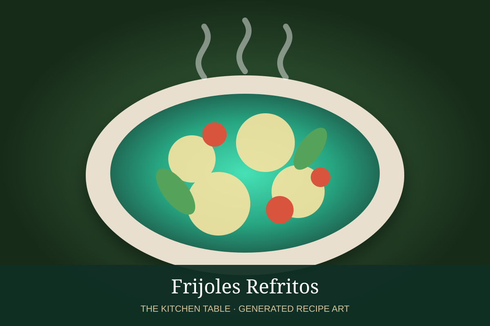

← Back to all recipes
BREAKFAST · MEXICAN
Molletes
Split bolillos spread with refried beans, covered with melted cheese, and topped with pico de gallo.
20 minServes 4

Photo: Recetas Mexas
Ingredients
- 4 bolillos, split
- 2 cups frijoles refritos
- 8 oz Oaxaca or Monterey Jack cheese
- 1 1/2 cups pico de gallo
- Butter, optional
Preparation
- Toast bolillo halves lightly.
- Spread generously with refried beans.
- Top with cheese.
- Broil until bubbling and lightly browned.
- Top with pico de gallo and serve immediately.
Related Mexican Recipes
Frijoles Refritos → · Pico de Gallo → · Huevos Rancheros → · Enfrijoladas →